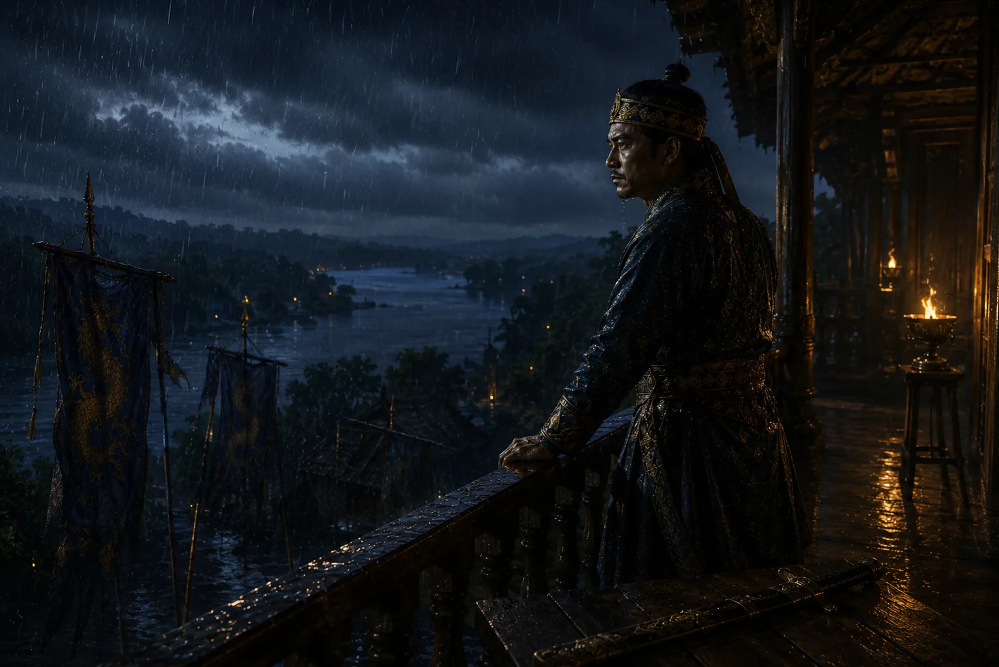

King Jayadhwaj Singha's Vow of Liberation
1663 · Against the Mughal Empire

Brokenhearted by the humiliating treaty and daughter's departure, Jayadhwaj returns to ruined Garhgaon and urges the court never to rest until the Mughals are expelled.
Sources have not yet been catalogued for this record.
People: Jayadhwaj Singha (Sutamla)